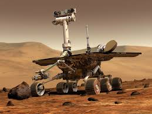

Robotics

Robotics is the branch of technology that deals with designing, building, operating, and using robots. Robots are intelligent machines that can perform tasks automatically. These tasks can range from simple repetitive work to complex operations in dangerous environments. Robotics is used in factories, hospitals, homes, space research, and many other places. Understanding robots helps us prepare for a future filled with intelligent automation.
Why Robots Matter
Robots improve accuracy, safety, and productivity. They help humans by doing tasks that are dull, dirty, or dangerous. In the medical field, they perform surgeries with precision. In industries, they increase efficiency. In homes, they clean floors or assist the elderly. Robotics also helps explore planets, oceans, and volcanoes where humans cannot easily go.
Basic Parts of a Robot
- Sensors – Detect things like light, sound, motion, or obstacles
- Controller – The brain of the robot that processes data
- Actuators – Move the parts of the robot like arms or wheels
- Power Source – Supplies energy, such as batteries
- Frame – The body that holds all components together
How Robots Understand and React
Robots get input from their sensors. This input is sent to the controller. Based on the code written inside, the robot decides what to do and sends commands to the motors or other output devices.
Example Code
if(sensorValue < 20){
stop();
}else{
moveForward();
}
Types of Robots
- Industrial Robots – Used in factories for welding, painting, assembly
- Medical Robots – Help in surgeries or deliver medicines
- Service Robots – Assist in homes, hotels, and hospitals
- Exploration Robots – Used in space or deep-sea exploration
- Military Robots – Used for defense and surveillance
Controllers Used in Learning
- Arduino: Easy for beginners, used to control lights, motors, etc.
- Raspberry Pi: More advanced, runs Linux, used for smart robots
- Micro:bit: Small, friendly, and ideal for students
Media Queries (For Responsive Robot Sites)
@media (max-width: 768px){
.robotBox {
font-size: 1.2rem;
flex-direction: column;
}
}
@media (min-width: 769px){
.robotBox {
font-size: 1.6rem;
flex-direction: row;
}
}
Top 10 Robots Worldwide (Including India)
Rashmi (India)
Rashmi is one of the world's first Hindi-speaking humanoid robots. Built by Ranjit Shrivastava, Rashmi can speak multiple languages and respond with facial expressions. She has been used in schools to talk to students and at public events to explain safety, education, and health topics in regional languages.
Champak (India)
Champak is a storytelling robot used in Indian museums to engage children and visitors. It tells folk tales, mythology, and art history in an entertaining way. Designed to educate through interaction, Champak combines culture and robotics beautifully. It can answer questions and adjust its tone depending on the audience.
Mitra (India)

Mitra is a popular Indian humanoid robot that greets people at hospitals, banks, and offices. It can speak in multiple Indian languages and recognize faces. During COVID-19, Mitra was used to reduce human contact and help patients and visitors by answering basic queries and guiding them through safety procedures.
RADA (India)
RADA is an interactive robot introduced by HDFC Bank to assist customers at branches. It provides information, guides customers to departments, and even entertains them. RADA is equipped with sensors, a touch interface, and voice recognition to make banking fun and friendly, especially for younger users.
ASIMO (Japan)
ASIMO is one of the most famous humanoid robots developed by Honda. It can walk, run, climb stairs, and interact with people. ASIMO can recognize faces, voices, and gestures. It was created to help in homes and public areas to support daily tasks for people with disabilities or elderly individuals.
Sophia (Hong Kong)
Sophia is a social robot known for her human-like appearance and behavior. Created by Hanson Robotics, she can express emotions, hold conversations, and even attend interviews. Sophia has been granted citizenship in Saudi Arabia and appears at many global events to talk about AI and ethics.
Atlas (USA)
Atlas, developed by Boston Dynamics, is a robot built for movement. It can jump, run, do backflips, and perform parkour. Atlas is mainly used in search and rescue, as it can balance on narrow surfaces and recover if it falls. It shows how close robots are getting to moving like humans.
Spot (USA)

Spot is a dog-like robot used in construction, police patrols, and disaster response. It can open doors, climb stairs, and walk on uneven surfaces. Spot uses cameras, sensors, and AI to map its environment. It has been deployed in dangerous zones to inspect areas without risking human life.
Solaris (Germany)
Solaris is a robot that operates using solar energy. It is used in environmental research and energy efficiency studies. Solaris can be deployed in forests, deserts, or farmlands to collect climate data, monitor solar output, and perform lightweight agricultural monitoring tasks.
Curiosity Rover (USA)

Curiosity is a space exploration robot sent to Mars by NASA. It is designed to move across Mars's rocky terrain and study the surface. It takes samples, sends pictures, and analyzes data to help scientists understand the planet's history. It has been active since 2012 and continues to explore Mars.
How Robotics Helps Our Lives
- Reduces the need for human labor in repetitive or dangerous jobs
- Increases efficiency in tasks like manufacturing or delivery
- Supports learning in schools through interactive kits
- Improves safety in rescue operations and nuclear plants
- Assists in surgery and elderly care at hospitals or homes
Drawbacks of Robots
- Can lead to job loss if used excessively in some industries
- Depend on electricity and programming to work properly
- Initial cost of design and production is high
- Lack human creativity and emotional intelligence
- Malfunction can lead to danger or confusion in sensitive tasks
What's Next in Robotics?
Future robots may be more human-like and able to make better decisions using AI. Robots will soon be in classrooms, farms, airports, and even in our kitchens. Students can learn early by building small robots using kits and microcontrollers. It’s a field where imagination meets engineering.
MCQs
1. What is robotics?
(a) A type of biology
(b) The branch of technology dealing with design, building, operating, and using robots
(c) Only the software used in computers
(d) A language for programming phones
► (b) The branch of technology dealing with design, building, operating, and using robots
2. Robots can perform tasks that are:
(a) Only simple and repetitive
(b) Only dangerous tasks
(c) From simple repetitive work to complex operations in dangerous environments
(d) Only related to entertainment
► (c) From simple repetitive work to complex operations in dangerous environments
3. Which area commonly uses robots for precise operations?
(a) Gardening only
(b) Hospitals and medical surgeries
(c) Only in video games
(d) Painting walls by hand
► (b) Hospitals and medical surgeries
4. Which component detects light, sound, motion, or obstacles?
(a) Sensors
(b) Controller
(c) Actuators
(d) Frame
► (a) Sensors
5. Which part is described as the brain of the robot?
(a) Power source
(b) Controller
(c) Frame
(d) Wheels
► (b) Controller
6. Which component moves the parts of the robot like arms or wheels?
(a) Sensors
(b) Controller
(c) Actuators
(d) Power source
► (c) Actuators
7. What supplies energy to a robot?
(a) Power source (like batteries)
(b) Controller
(c) Sensors
(d) Actuators
► (a) Power source (like batteries)
8. How does a robot decide what action to take?
(a) The controller processes sensor input and sends commands
(b) The frame makes the decision
(c) The power source decides
(d) Random chance
► (a) The controller processes sensor input and sends commands
9. Given the code: if(sensorValue < 20){ stop(); } else { moveForward(); } — what happens when sensorValue is 10?
(a) The robot moves forward
(b) The robot stops
(c) The robot powers off
(d) The robot increases speed
► (b) The robot stops
10. Which Indian robot greets people at hospitals, banks, and offices?
(a) Rashmi
(b) Champak
(c) Mitra
(d) RADA
► (c) Mitra
11. Which famous robot can walk, run, and climb stairs?
(a) ASIMO
(b) Sophia
(c) Spot
(d) Curiosity Rover
► (a) ASIMO
12. Which robot is described as dog-like and used in construction and inspections?
(a) Atlas
(b) Spot
(c) Solaris
(d) RADA
► (b) Spot
13. Which robot is a Mars rover used for space exploration?
(a) Atlas
(b) Spot
(c) Solaris
(d) Curiosity Rover
► (d) Curiosity Rover
14. Which controller is easy for beginners and used to control lights and motors?
(a) Arduino
(b) Raspberry Pi
(c) Micro:bit
(d) ASIMO
► (a) Arduino
15. Which controller usually runs Linux and is used for more advanced robotics?
(a) Arduino
(b) Raspberry Pi
(c) Micro:bit
(d) Spot
► (b) Raspberry Pi
16. In the example media query, @media (max-width: 768px) sets .robotBox to which layout?
(a) No layout change
(b) Row direction
(c) Column direction
(d) Grid with three columns
► (c) Column direction
17. Which is a key benefit of robots mentioned in the text?
(a) They improve accuracy, safety, and productivity
(b) They remove the need for electricity
(c) They always replace human creativity
(d) They make work slower
► (a) They improve accuracy, safety, and productivity
18. Which is a drawback of robots listed in the content?
(a) They can lead to job loss in some industries
(b) They never require maintenance
(c) They always cost nothing to build
(d) They have unlimited creativity
► (a) They can lead to job loss in some industries